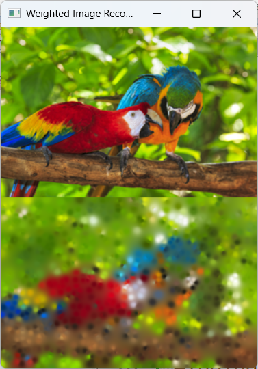

1. Introduction
In this article, we will see how we can reconstruct an image using Accumulative Weighted Interpolation.
The full program is available here: https://github.com/blueberry077/Weighted-Image-Reconstruction

2. Interpolation Formulation
Let \( A \), \( B \) and \( C \) be points in an Euclidean plane and each with a known attribute, \( F(A) \) and \( F(B) \). Let's calculate the unknown attribute \( F(C) \).
In order to calculate \( \mathcal{P}(C) \), we need the distance \( d_A \) and \( d_B \), respectively the length of \( \left[ AC \right] \) and \( \left[ BC \right] \)
These distances allow us to calculate the weights \( w_A \) and \( w_B \) that will influence \( F(C) \).
To give more influence to the closest point, we assign weights inversely proportional to the distances. We then normalize them so that their sum equals 1:
If \( d_A \gt d_B \) then \( w_A \lt w_B \)
If \( d_A \lt d_B \) then \( w_A \gt w_B \)
Then we can calculate \( F(C) \) the weighted average of the attributes at \( A \) and \( B \) to \( C \):
3. Generalization to Multiple Points
Now, in an Euclidean plane, say we have \( n \) points: \( P_0,P_1,P_2,...,P_n \) and attributes \( F_0,F_1,F_2,...,F_n \) and a point \( C \), to which we want to calculate the attribute \( F(C) \).
For each point \( P_i \), we calculate the distance \( d_i \) to \( C \):
Then we calculate the weight \( w_i \) of the point \( P_i \).
Since we don't have directly the "other" distance like in section 2, the inverse of the distance, ensuring that closer points have greater influence.
The interpolated attribute is therefore \( F(C) \)
4. Notes
Apparently this exists as Inverse Distance Weighting (IDW).
I had fun learning LaTeX and figuring out a solution for a small prototype.